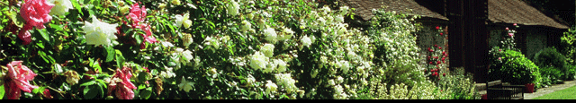

Home
Festival Info
Artists
History
Links
Contact
Links
Robert Cohen.
The Festival's artistic director.
Cambi di Stagione.
Associated festival. Festival internazionale di musica da camera (Fondazione Bottari Latte - Monforte d'Alba - Italy).
Charleston Farmhouse.
The Bloomsbury Group Centre, a few miles away.
Seaford.
Information about the local town in East Sussex.
Nicholas Younge Society.
The Chamber Music Society based in nearby Lewes.
Lark Insurance Broking Group.
Sponsor of the 2009 and 2010 festivals.
Cello Group PLC.
Sponsor of the 2006 and 2007 festivals.